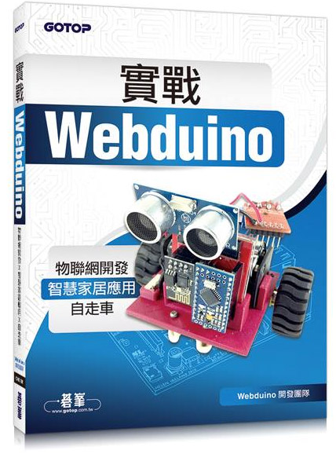

NEWS！WEBDUINO 雲端平台上線囉～
雲端平台是 Webduino 研發的雲端服務。平台裡不僅具備全方位的物聯網開發工具：雲端裝置管理、Webduino Blockly，未來更會整合模擬器、App 開發工具和後端流程工具，實現「只要做一個網頁，就可以從硬體到軟體、從軟體到雲端、從雲端到行動裝置」的完整應用。
✦ 開始體驗：https://cloud.webduino.io/
實戰 Webduino - 物聯網開發 x 智慧家居應用 x 自走車
由 Webduino 開發團隊所撰寫的第一本書籍：「實戰 Webduino - 物聯網開發 x 智慧家居應用 x 自走車」，由碁峰出版社出版，於 2016 年 1 月 22 號正式於博客來、天瓏等網路書店販售，內容從基本的 HTML、CSS 和 JavaScript，介紹到利用 Webduino 所完成的許多相關應用 ( RFID、智慧插座、自走車...等 )，非常適合學校教學以及物聯網的新手入門。
售價：
新台幣 450 元整 ( 訂價，折扣後實際價格以各網路書店為主 )
點選「立刻購買」，將會分別前往博客來、天瓏網路書店，歡迎政府機關、教育單位或公司行號採購，採購相關資訊請 來信 或來電 07-3388511 洽詢。
書籍大綱：
輕鬆實現跨出物聯網開發的第一步
Webduino的誕生，替物聯網開啟了最關鍵的一條路，讓網頁開發者可以輕鬆跨入硬體的領域，讓硬體開發者可以立即使用網頁的服務。
只要會做網頁，就能馬上體驗玩硬體的樂趣
雖然大家都說Arduino的IDE很方便，可是那猶如天書的程式碼還是讓人覺得很難懂，有沒有更輕鬆的方法可以使用Arduino呢？如果您有這樣的期待，Webduino就是您最好的選擇。Webduino純粹利用HTML、Javascript等網頁程式語法進行開發，不需要學習艱難的C或C++，只要會寫網頁，就可以藉由Arduino控制形形色色的傳感器，打開虛擬世界與真實世界的通道。
電腦、平板、手機都支援
因為是藉由網頁控制元件或傳感器。因此，不論是Windows、Mac、Android或iPhone/iPad都可以順利運行，輕鬆實現跨平台的控制。
書籍章節：
- Chapter 01｜踏入物聯網的第一步
- Chapter 02｜認識 Webduino
- Chapter 03｜快速上手 HTML
- Chapter 04｜越來越夯的 CSS
- Chapter 05｜用 Blockly 玩轉 Javascript
- Chapter 06｜點亮人生的第一顆 LED
- Chapter 07｜轉吧七彩霓虹燈
- Chapter 08｜隔空控制的特異功能
- Chapter 09｜聆聽世界的聲音
- Chapter 10｜小小作曲家
- Chapter 11｜點點按按好好玩
- Chapter 12｜機器人的關節技
- Chapter 13｜光敏電阻與可變電阻
- Chapter 14｜千變萬化跑馬燈
- Chapter 15｜三軸加速感應器
- Chapter 17｜繼電器與智慧插座
- Chapter 18｜萬能自走車
書籍封面：
